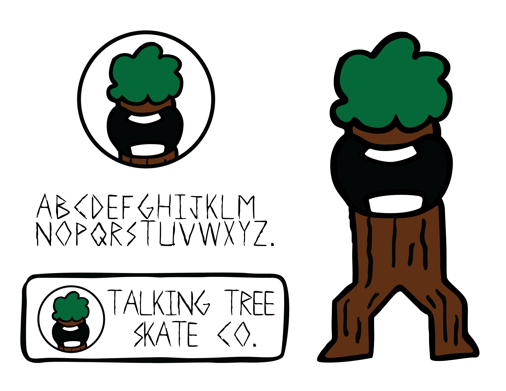
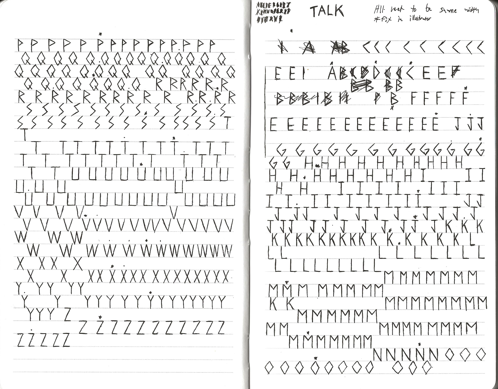
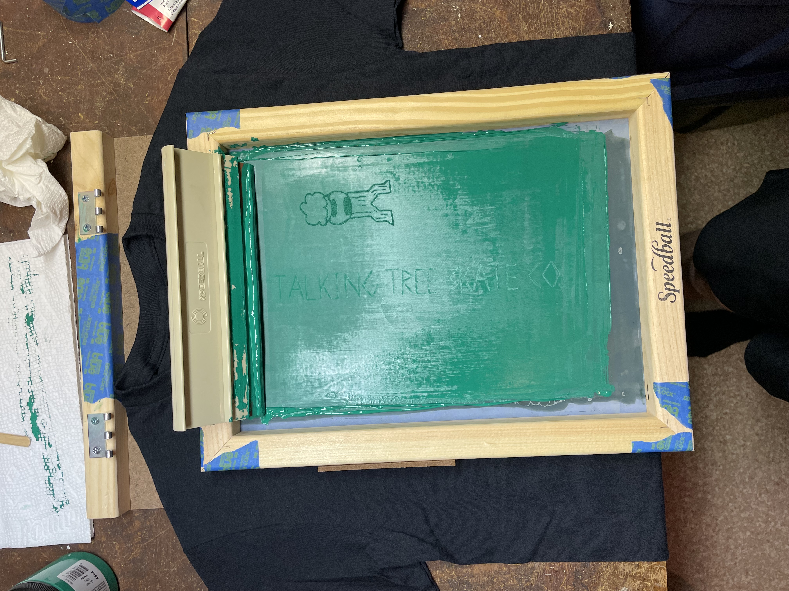
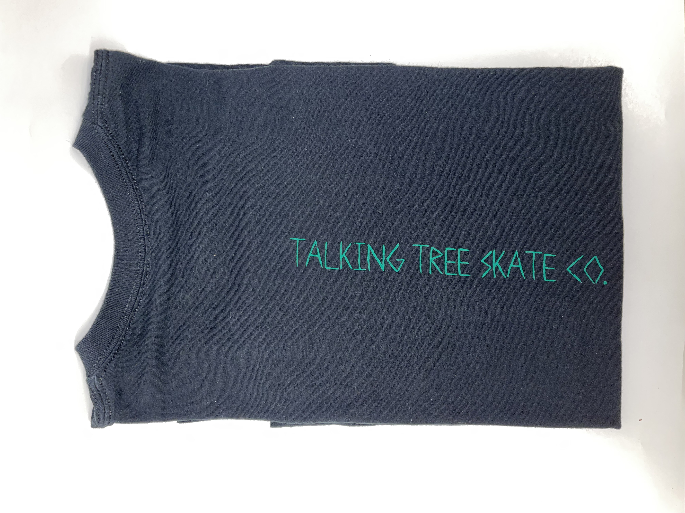
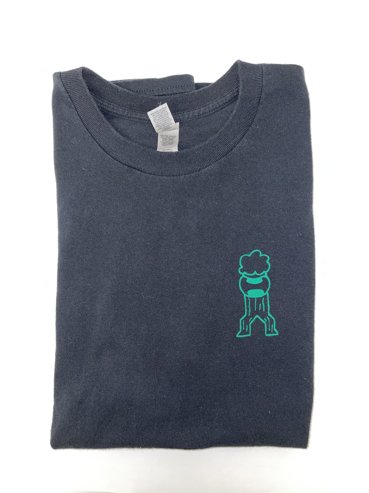

Personal project, Fall 2022, Adobe Illustrator, pen and paper, water-based ink on cotton, 3.25x1.25 inches and 1x11 inches.
I had begun this project around March of 2022, as a way to challenge myself, I wanted to design a logo and create an entire company from scratch. I have found that if a design does not work in black and white it probably will not work in color, and I applied that when creating this design by limiting myself to only a pen. I also created my own custom font and many character variations for the company. I had begun printing on t-shirts in November 2022, which I later distributed to my close friends. I felt that creating a vector graphic that looked hand-drawn, as opposed to a clean edge, looked much better and implies that someone took the time to create the design.
    